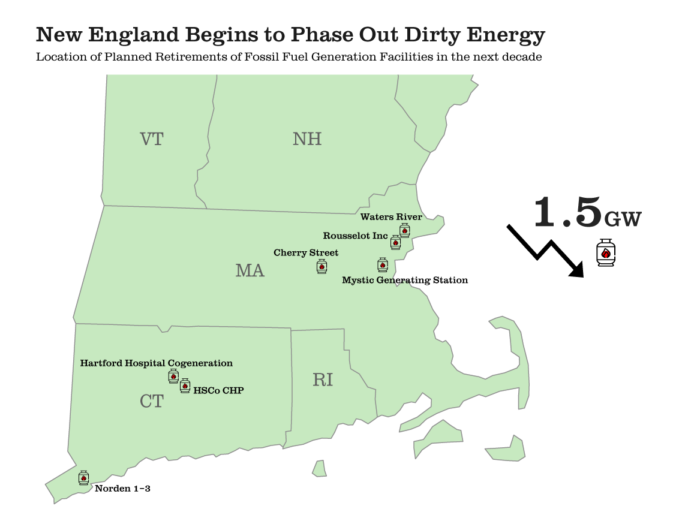
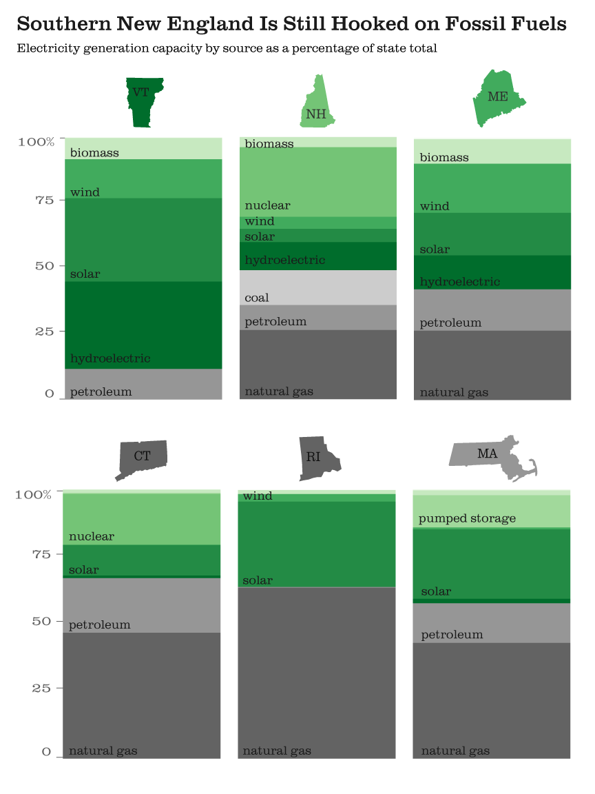
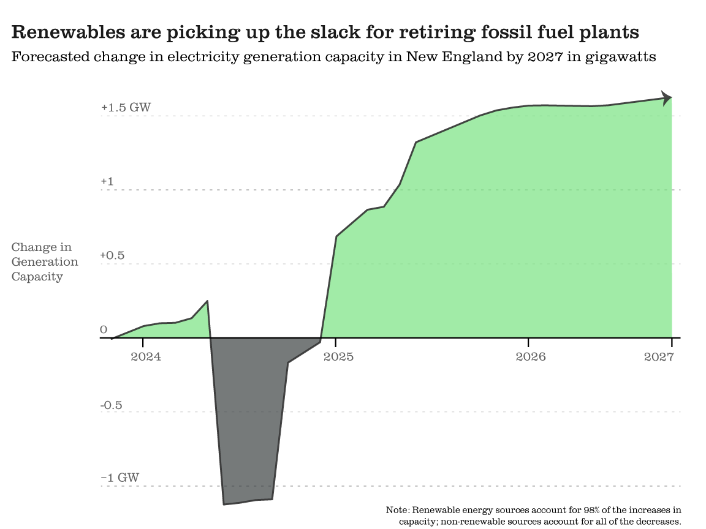

By Ethan Drake
The Mystic Generating Station outside of Boston, MA, pictured above, is set to shut down on June 1, 2024. The natural gas plant, which is the second largest electricity generation plant in New England and the largest in Massachusetts, has been a fixture of the Boston skyline since its construction during World War II. While its retirement is largely due to aging infrastructure, the decision to close the plant is in no small part the result of state climate goals that mandate a transition away from fossil fuels.
With climate change in mind, states like Massachusetts are being forced to make difficult decisions on how to transition away from fossil fuels and towards renewable energy. While halting fossil fuel usage is good for the planet, the burden gets placed on the consumer, who may face electricity shortages or dramatic increases in their energy bills. As states look to retire fossil fuels, they need to find something cleaner and cost-effective to replace it with.
Enter Vineyard Wind 1. The offshore wind project located 15 miles south of Martha’s Vineyard is slated to be complete in the second half of 2024 and will bring 804 MW of electricity generation capacity to the New England region. While Vineyard Wind’s energy capacity doesn’t quite make up for the more than 1,400 MW that the region is losing with the retirement of the Mystic plant, many more wind projects are on the way. Revolution Wind, which will be built off the coast of southern Rhode Island, will bring another 704 MW of renewable generating capacity.
As the example of the retiring Mystic Generating Station and the construction of Vineyard Wind 1 shows us, the transition to a clean energy future is a policy decision. States must prioritize clean energy decisions, even as they face rising energy costs. Demand for electricity isn’t going down anytime soon; indeed, recent studies are showing that energy consumption is expected to increase for the first time in decades. In this piece, I hope to look at how prepared states in the New England region are for the transition away from fossil fuels.
It is important to take care of the patient, to be followed by the patient, but it will happen at such a time that there is a lot of work and pain. For to come to the smallest detail, no one should practice any kind of work unless he derives some benefit from it.
It is important to take care of the patient, to be followed by the patient, but it will happen at such a time that there is a lot of work and pain. For to come to the smallest detail, no one should practice any kind of work unless he derives some benefit from it.
Do not be angry with the pain in the reprimand in the pleasure he wants to be a hair from the pain in the hope that there is no breeding. Unless they are blinded by lust, they do not come forth; they are in fault who abandon their duties and soften their hearts, that is, their labors.
© Stadia Maps © Stamen Design © OpenMapTiles © OpenStreetMap contributors. D. Kahle and H. Wickham. ggmap: Spatial Visualization with ggplot2. The R Journal, 5(1), 144-161. URL
Gas by sentya irma from Noun Project (CC BY 3.0)
renewable energy by Yayat Dayat from Noun Project (CC BY 3.0)
decrease by Xinh Studio from Noun Project (CC BY 3.0)